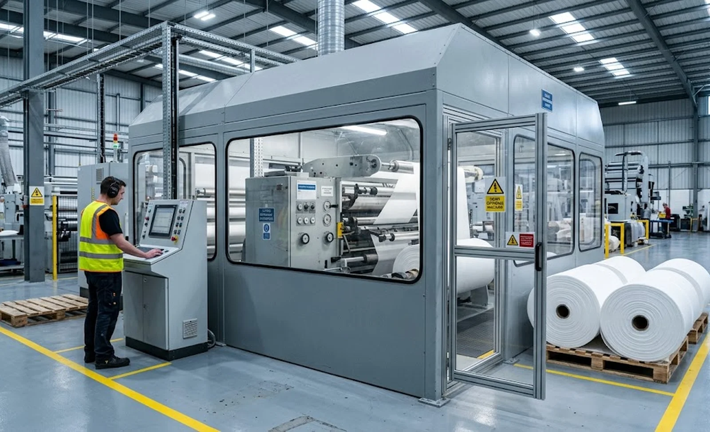
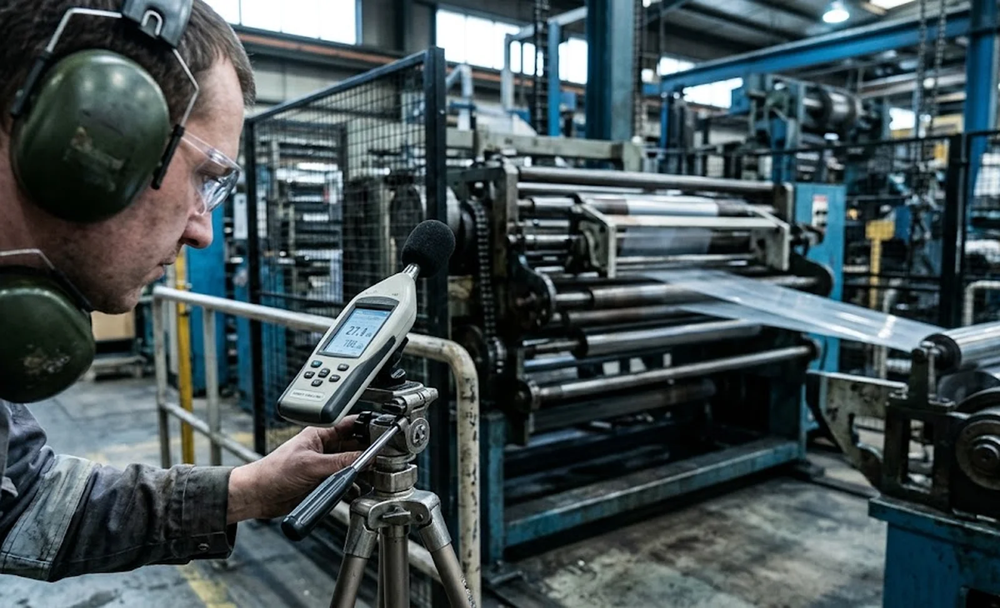

Published November 6, 2026 | By HDPTH Technical Editorial Team

Speed, width, tension control and price dominate every slitter rewinder comparison. Noise usually enters the conversation late — often after installation, when the first workplace measurements show the operator standing above an action value. At that point an enclosure becomes a retrofit, engineered around a fixed machine and paid for twice. Emission figures cost nothing to request at quotation stage, yet they decide whether the plant stays below its legal thresholds, whether operators work all shift without hearing protection, and where the machine can physically sit.
Why noise emission belongs in the purchase decision
Workplace noise is regulated in almost every market you will run the machine in. In the EU, Directive 2003/10/EC sets an upper exposure action value of 85 dB(A) over an eight-hour day; US OSHA triggers a hearing conservation programme at the same level. A machine emitting 88–92 dB(A) at the operator station crosses those thresholds on its own, bringing mandatory hearing protection, audiometric testing, signage, training and records — permanent running costs nobody priced into the quotation. Treat emission as a specification line from day one: it costs the buyer a question and the supplier an engineering decision made while the design is still open.
The two noise numbers every quotation should carry
Noise claims mean nothing without the right figures and the conditions behind them. The first is LpA, the A-weighted emission sound pressure level at a defined position — normally the operator station — which tells you what a person standing there hears. The second is LWA, the A-weighted sound power level radiated by the machine as a whole, largely independent of the room and suited to fair comparison. The recognised methods are EN ISO 11201 for LpA and EN ISO 3744 for sound power. Under EU machinery legislation — Directive 2006/42/EC and its successor Regulation (EU) 2023/1230 — both values must be declared with uncertainty whenever emission exceeds 70 dB(A). Demand figure, uncertainty, standard and operating condition together: the same machine can vary by several decibels between idle and full speed on thin film.

Workplace exposure limits you must design around
Directive 2003/10/EC works in three tiers: at 80 dB(A) LEX,8h employers inform workers and offer protection; at 85 dB(A) protection and a prevention programme become mandatory; the limit is 87 dB(A) taking hearing protector attenuation into account, with peak values of 135, 137 and 140 dB(C). US OSHA requires a hearing conservation programme at 85 dB(A) TWA with a limit of 90 dB(A) on a 5-dB exchange rate; NIOSH recommends 85 dB(A) on a 3-dB exchange. For a buyer the consequence is arithmetic: a 3 dB increase halves the allowable exposure time, so a machine emitting 86 dB(A) against an 85 dB(A) target forces protection, shift rotation or quieter engineering. Set the target per your regime and make it a specification line with the same discipline as speed or tolerance.
What actually drives noise on a slitter rewinder
The ranking of sources is predictable. The cutting zone leads: shear and score blades shearing the web, razor edges whistling through film. Next comes the web itself — flutter and air pumping between rollers — rising roughly 6 dB per doubling of speed, which makes thin films far louder than heavy nonwovens. Then the auxiliary systems: trim extraction fans, vacuum nozzles, compressed-air web cleaning, plus gear meshes, bearings, the unwind brake and core chucks. Cutting method changes the profile: shear is generally quieter than razor or score on the same web, while ultrasonic and laser cutting remove impact noise but add their own signature. Ask each supplier to rank the sources on your product and state which are treated at source — quiet components specified at build cost far less than panels bolted on afterwards.
Enclosure and noise-control options to compare
A full acoustic enclosure delivers the largest reduction — typically 10 to 15 dB(A) when well sealed — but buys it with visibility, slower threading and knife setup, heat management inside the hood, longer maintenance access and additional interlocked doors. A partial enclosure around the dominant source, most often the cutting station, typically achieves 5 to 8 dB(A) while preserving access. Acoustic lining inside existing guards, damping panels on sheet-metal hoods and silencers on fan and vacuum exhausts attack specific contributors cheaply. The operator booth — a conditioned control room at the machine — moves the person rather than the machine, and is the pragmatic answer where LpA cannot be cut far enough. Whatever the option, insist on emission data measured with the mitigation installed, not theoretical panel ratings.
Specifying, measuring and verifying noise in the contract
A noise guarantee becomes real when it reads like a test line. Write it as: “LpA ≤ 80 dB(A) at the operator station, measured per EN ISO 11201, on [material], at [line speed], with the machine equipped exactly as quoted, uncertainty ±X dB.” Then give it teeth at the factory acceptance test: the protocol repeats the line verbatim, requires a calibrated class 1 sound level meter and applies the background correction the standard demands — background at least 6 to 10 dB below the machine level. Agree the tolerance in advance; ±3 dB reflects normal measurement uncertainty and prevents an argument at 81 dB(A). Require the noise information in the instruction handbook as machinery legislation expects, and add a remedy clause: if the measurement exceeds the guarantee, the supplier solves the quieting at its own cost. A number with a protocol is a contract; without one it is a brochure.
Once the emission figures are on the table, the engineering choices behind them matter, and our Slitter Rewinder Noise Reduction Buyer’s Guide: Sound Specifications, Enclosures and Hearing Conservation walks through those design measures in detail. Because enclosures interact directly with machine safety requirements, see our Slitter Rewinder Machine Safety Guarding Buyer’s Guide. To review lines engineered for stable, quiet high-speed running, browse the HDPTH high-speed slitting machines series.
Need a Noise Figure You Can Hold the Supplier To?
Send HDPTH your material, line speed and workplace noise targets. Our engineers will state the emission values we would guarantee, the measurement conditions behind them and the enclosure options that justify their cost — before you commit to a build.
Submit Your Project InquiryFrequently asked questions
What noise data must a slitter rewinder supplier provide?
Machinery legislation requires the manufacturer to state the emission sound pressure level at the workstation and the sound power level, with uncertainty, whenever emission exceeds 70 dB(A). Ask for the standard used and the operating condition behind the values — material, speed and configuration — and check the same figures appear in the instruction handbook.
What is the difference between LpA and LWA?
LpA is the emission sound pressure level at a defined point, typically the operator station — what a person standing there hears. LWA is the sound power level radiated by the machine as a whole, largely independent of the room. You need both: LWA for comparison, LpA for the workplace assessment.
What workplace noise limits apply after installation?
Under EU Directive 2003/10/EC the action values are 80 and 85 dB(A) over eight hours, the limit 87 dB(A) with hearing protection, peaks 135/137/140 dB(C). US OSHA requires a hearing conservation programme at 85 dB(A) TWA with a limit of 90 dB(A); NIOSH recommends 85 dB(A).
Which parts of a slitter rewinder produce the most noise?
Usually the cutting zone, then web flutter and air movement at speed — roughly 6 dB per doubling — then trim extraction fans, vacuum nozzles, gearboxes and the unwind brake. Thin films flutter louder than heavy nonwovens, and the ranking changes with material and speed, so the supplier must rank the sources on your product.
How much noise reduction does an enclosure deliver?
A well-sealed full enclosure typically reduces LpA by 10 to 15 dB(A); a partial enclosure around the dominant source achieves 5 to 8 dB(A). The real figure depends on sealing, opening sizes and correct source identification, so insist on data measured with the enclosure installed.
How is the noise guarantee verified at the factory acceptance test?
The protocol repeats the contract line: LpA per EN ISO 11201 at the operator station, on the agreed material and speed, with a calibrated class 1 meter and background at least 6 to 10 dB below the machine level. Agree the tolerance in advance; ±3 dB reflects normal measurement uncertainty.
Sources
- Directive 2003/10/EC on the minimum health and safety requirements regarding exposure of workers to noise (EUR-Lex full text)
- EU-OSHA: noise in the workplace — guidance and exposure data
- US OSHA: occupational noise exposure standards and resources
- ISO: EN ISO 11201 and EN ISO 3744 noise emission measurement standards